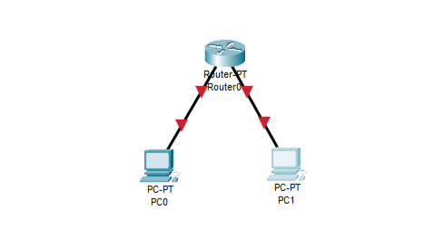
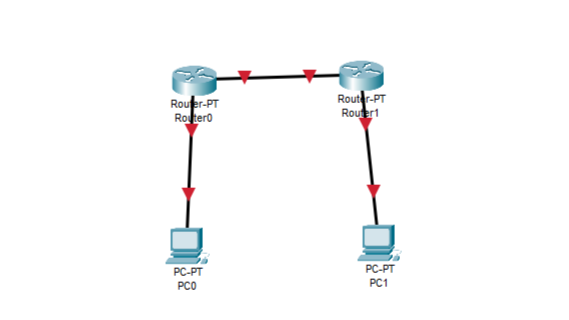
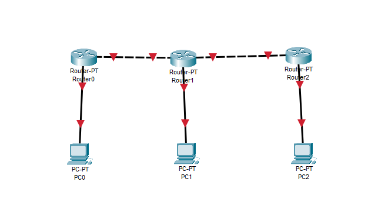
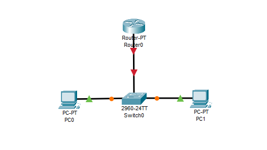

Belajar memahami dasar hingga lanjutan konfigurasi jaringan menggunakan CLI dengan pendekatan praktis
Konsep: Jaringan sederhana ini membantu memahami komunikasi dasar antar perangkat menggunakan IP dan gateway. Dua PC dihubungkan ke satu router agar dapat saling berkomunikasi lintas jaringan.

Router> enable
Router# configure terminal
Router(config)# interface fastethernet0/0
Router(config-if)# ip address 192.168.1.1 255.255.255.0
Router(config-if)# no shutdown
Router(config)# interface fastethernet0/1
Router(config-if)# ip address 192.168.2.1 255.255.255.0
Router(config-if)# no shutdown
Router(config)# exit
Konfigurasi IP di PC:
Buka Command Prompt di PC1, ketik ping 192.168.2.2. Jika semua konfigurasi benar, paket akan berhasil terkirim dan muncul balasan (reply).
Pada konfigurasi ini, dua PC dapat saling berkomunikasi melalui router berkat IP Address dan gateway yang tepat. Pemahaman dasar ini penting sebelum melangkah ke routing dan VLAN yang lebih kompleks.
Konsep: Routing statis memungkinkan admin menentukan jalur antar jaringan secara manual. Ini cocok untuk jaringan kecil yang tidak sering berubah.

Router0> enable
Router0# configure terminal
Router0(config)# interface fastethernet0/0
Router0(config-if)# ip address 192.168.1.1 255.255.255.0
Router0(config-if)# no shutdown
Router0(config)# interface serial0/0/0
Router0(config-if)# ip address 10.0.0.1 255.255.255.252
Router0(config-if)# no shutdown
Router0(config)# ip route 192.168.2.0 255.255.255.0 10.0.0.2
Router1> enable
Router1# configure terminal
Router1(config)# interface fastethernet0/0
Router1(config-if)# ip address 192.168.2.1 255.255.255.0
Router1(config-if)# no shutdown
Router1(config)# interface serial0/0/0
Router1(config-if)# ip address 10.0.0.2 255.255.255.252
Router1(config-if)# no shutdown
Router1(config)# ip route 192.168.1.0 255.255.255.0 10.0.0.1
Lakukan ping dari PC1 ke PC2. Jika konfigurasi benar, kedua PC akan bisa berkomunikasi meskipun berada di jaringan berbeda.
Routing statis memberi kendali penuh kepada administrator, namun kurang fleksibel jika topologi sering berubah. Konsep ini melatih logika penentuan jalur data dan menjadi dasar untuk memahami routing dinamis.
Konsep: OSPF (Open Shortest Path First) adalah protokol routing dinamis yang menghitung rute otomatis berdasarkan jarak terpendek.
network untuk mendefinisikan interface mana yang ikut dalam OSPF.
Router(config)# router ospf 1
Router(config-router)# network 192.168.1.0 0.0.0.255 area 0
Router(config-router)# network 10.0.0.0 0.0.0.255 area 0
Router(config-router)# exit
Dengan OSPF, setiap router dapat menyesuaikan rute otomatis saat ada perubahan jaringan. Ini sangat efisien untuk topologi besar, karena mengurangi konfigurasi manual dan mempercepat konvergensi jaringan.
Konsep: VLAN digunakan untuk memisahkan jaringan logis dalam satu switch fisik, agar lalu lintas data lebih efisien dan aman.

Switch> enable
Switch# configure terminal
Switch(config)# vlan 10
Switch(config-vlan)# name STAFF
Switch(config)# interface fastethernet0/1
Switch(config-if)# switchport mode access
Switch(config-if)# switchport access vlan 10
Switch(config-if)# exit
Switch(config)# interface fastethernet0/2
Switch(config-if)# switchport mode access
Switch(config-if)# switchport access vlan 20
VLAN memungkinkan pemisahan lalu lintas antar departemen atau fungsi dalam jaringan yang sama tanpa menambah perangkat baru. Ini meningkatkan efisiensi, keamanan, dan pengelolaan jaringan perusahaan modern.